library(tidyverse)4 Descriptive Statistics (2)
4.1 Preparation
4.1.1 Before You Start
Before you start working on this chapter, you need to do the following. If you need a help for each step, see Section 3.1.
Launch RStudio.
Load
POL232.RDatainto your current R session.Prepare an R Script to save all your work in this chapter. I suggest you name it “
POL232_Lab#_YourLastName.R” in which#is the number of the current lab session.You also need to load
tidyversepackage into your current R session (Section 1.4.2).
4.1.2 Actually Write R Functions
I repeat below the suggestions I made in Section 3.1.5.
I suggest you actually write the R functions used below in your R script instead of copying and pasting them. By actually writing them and occasionally making mistakes and correcting them, you can get used to how RStudio works more quickly and effectively.
If you simply copy and paste them, you will not learn much about RStudio and will not get used to it.
In your R script, leave sufficient descriptions of the functions after the
#sign (see Section 2.2.2) so that you can use your R script later as your reference when you conduct analysis using these R functions.These descriptions are notes for yourself. Organize these descriptions/notes so that they are convenient for your futur use.
4.2 Bar Chart: ggplot() + geom_bar() & Edit Variables
In Chapter 3, we learned how to draw a histogram using the ggplot() function.
A histogram is an appropriate visualization if the variable of interest takes many values and/or is continuous. If the variable takes only a small number of values and/or is categorical, a bar chart may be more appropriate. Let’s draw a bar chart for the variable on the respondent’s perception of economy (percep_economy_cps) from the Canadian Election Study 2019 (ces2019).
To draw a bar chart, we augment the ggplot() function with the geom_bar() function (as opposed to the geom_histogram() function we used to draw a histogram).
First, try the simplest implementation of these functions as shown below.
ggplot(ces2019, aes(percep_economy_cps)) + geom_bar()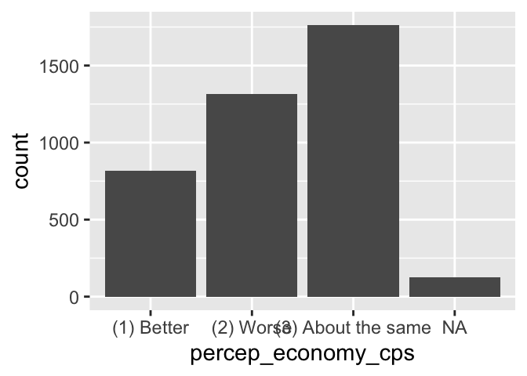
We can apply many of the additional arguments and functions we learned for a histogram to a bar chart. Let’s see an example.
bar_econ <- ggplot(ces2019, aes(percep_economy_cps)) +
geom_bar(fill = "dodgerblue", color = "black") +
labs(title="Perception of Economy") +
ylab("") +
xlab("")
print(bar_econ)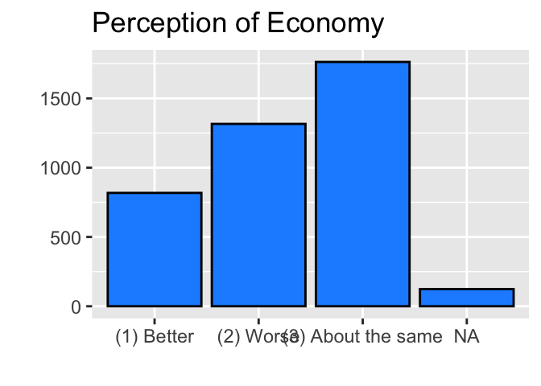
Note that in the above code, I assigned the ggplot() functions for a bar chart to a new object bar_econ and then used the print() function to draw it.
Try to identify what each line of the above code accomplishes. If you need a refresher, see Chapter 3. You can also use a keyword search over the entire webbook from the left menu.
By the way, as we saw in Section 3.4, instead of using the print()function, you can also simply type in bar_econ in the R Console to run the ggplot() functions assigned to bar_econ.
bar_econ
4.2.1 Change Angle of Value Labels on X Axis: theme(), axis.text.x, element_text()
In the X-axis of the above bar chart, notice that the names of the categories (or values) of the variable cannot be read because of an overlap. This is because the names are too long to be properly displayed in a horizontal direction.
We can change the angle of the names of the categories (or values) of a variable (= value labels of a variable) by the theme function as shown below.
bar_econ +
theme(axis.text.x = element_text(angle = 90))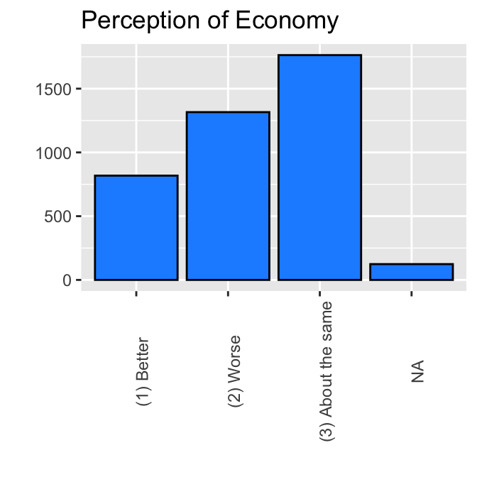
If you specify a different number to angle, then value labels are presented in a different angle. For example, try the following.
bar_econ +
theme(axis.text.x = element_text(angle = 60))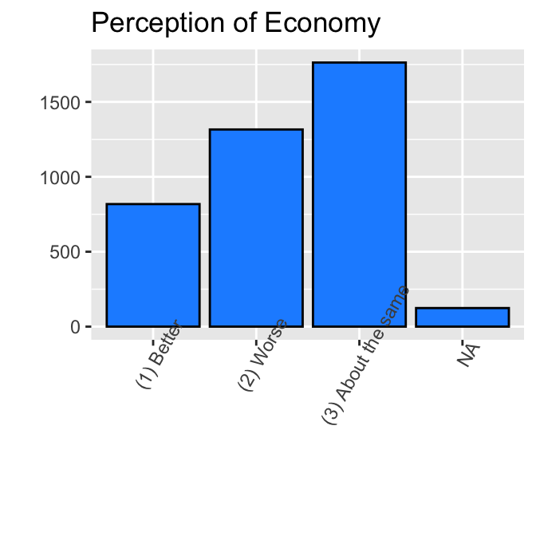
We may want to edit this bar chart further. First, instead of “Better,” “Worse,” and “About the Same” in the above bar chart, we may want to re-order them from “Worse,” “About the Same” to “Better.” Second, we may want to change the name of the categories — more specifically, we may want to remove the numbers and parentheses and shorten the name from “About the same” to “same.” Third, we may want to remove “NA” from the bar chart.
We will do these edits one by one.
4.2.2 NA: Missing Observations
By the way, NA indicates the observations for which the variable of interest is missing. We call such observations “missing observations” and those NAs “missing values.”
To know more about missing observations, browse ces2019 using the View() function or clicking ces2019 in the Environment tab on the upper right pane.
View(ces2019)Then, you can find that for some observations, the values of some variables are NA, as shown below. These entries (NAs) indicate that the values of these variables are missing for these observations.
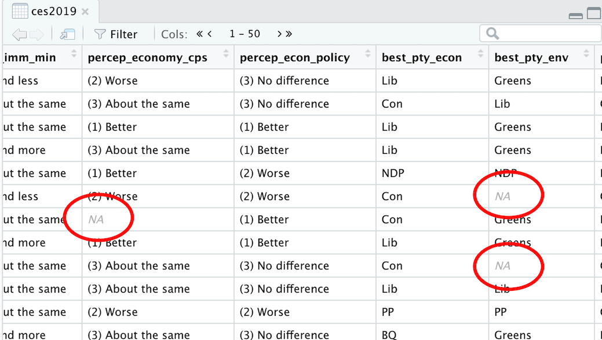
The ggplot() + geom_bar() functions include these missing observations in the bar chart they draw. However, we may want to exclude these missing observations from the bar chart.
4.2.3 Factor for Categorical Variables: glimpse()
Depending on their characteristics, variables in a data frame may be stored in different formats in R. Normally, our dataset includes both quantitative (or numeric) variables, which take numbers (numerical values), and categorical variables, which take a set of categories. Of the variables from ces2019 that we have examined so far, the Trudeau thermometer (truedeau_therm_cps) is a quantitative (or numeric) variable, as it takes a number between 0 and 100. Respondent’s perception of the state of the national economy (percep_economy_cps) is a categorical variable, as it takes three categories indicating the respondents’ perception of economy. These two types of variables are stored in different formats in a data frame.
To see different formats for variables, try the glimpse() function below with the name of a data frame as its argument.
glimpse(ces2019)Rows: 4,021
Columns: 5
$ sample_id <dbl> 18, 32, 39, 59, 61, 69, 157, 158, 165, 167, 185, 220…
$ birth_year <dbl> 1963, 1973, 1994, 2000, 1984, 1939, 1999, 1995, 1963…
$ gender <fct> (1) Male, (1) Male, (1) Male, (1) Male, (1) Male, (1…
$ province <fct> QC, QC, QC, QC, QC, QC, QC, QC, QC, QC, QC, QC, QC, …
$ satisfied_dem_cps <fct> (3) Not very satisfied, (2) Fairly satisfied, (1) Ve…Your R Console prints a list like the one above for all variables in ces2019. For brevity, I printed only the first five variables above. As its name suggests, the glimpse() function offers a glimpse into your data frame — names of variables, their format, and the values of the first few observations.
In this list, you can see that the format1 of the variables are either <dbl> or <fct>.
<dbl> is for numeric (or quantitative) variables,2 for which each value is number, and <fct> is for categorical variables, which is stored in a format called factor. For example, sample_id and birth_year are numbers (numeric variables), hence they are given <dbl> in the list above. gender, province, and satisfied_dem_cps are categorical variables, and the list above indicates <fct> for these variables. A factor is a special format for categorical variables in R, which offers convenient functionalities for this type of variable. We will use these functionalities of factor to edit percep_eonomy_cps.
4.2.4 Create New Variable: mutate(), head()
Suppose we want to create a new variable for which the order of categories of percep_economy_cps will appear from “Worse,” “Same” to “Better” when we draw a bar chart.
We will create such a variable step by step in the next few sections.
In this section, I will explain how we can create a new variable in our data frame. For simplicity, we will create a new variable percep_economy_cps_copy which is exactly the same as percep_economy_cps. We can do this by the mutate() function.
ces2019 <- mutate(ces2019,
percep_economy_cps_copy = percep_economy_cps)The first argument of the mutate() function is the data frame to which we want to add a new variable. Its second argument specifies the content of this new variable by name-of-new-variable = its-content. In the above code, it is specified that the new variable percep_economy_cps_copy equals percep_economy_cps.
The right hand side of <- (the assignment operator3, see Section 2.3.3) in the above code mutated the data frame ces2019 by adding a new variable percep_economy_cps_copy. Then, this new, mutated data frame is assigned to ces2019 on the left hand side of <-. In other words, ces2019 is now updated with an additional variable percep_economy_cps_copy.
Check if the new variable percep_economy_cps_copy is added to your data frame using the glimpse() function. If you apply the glimpse() function to ces2019, now you can see this new variable percep_economy_cps_copy at the end of the data frame. For brevity, I show only percep_economy_cps and percep_economy_cps_copy below. They are exactly the same.
glimpse(ces2019)Rows: 4,021
Columns: 2
$ percep_economy_cps <fct> (2) Worse, (3) About the same, (1) Better, (3)…
$ percep_economy_cps_copy <fct> (2) Worse, (3) About the same, (1) Better, (3)…We can also use the head() function to see the first few observations of a variable. Try the code below.
head(ces2019$percep_economy_cps)[1] (2) Worse (3) About the same (1) Better (3) About the same
[5] (1) Better (2) Worse
Levels: (1) Better (2) Worse (3) About the same head(ces2019$percep_economy_cps_copy)[1] (2) Worse (3) About the same (1) Better (3) About the same
[5] (1) Better (2) Worse
Levels: (1) Better (2) Worse (3) About the sameAs you can see, the values for each observation are exactly the same between percep_economy_cps and percep_economy_cps_copy.
By specifying the right hand side of = in the second argument of the mutate() function in different ways, we can create different types of new variables.
The mutate() function may also be used to edit the existing variables in our data frame.
We will see a few examples in this chapter and subsequent chapters.
4.2.5 Change Levels and Their Order of Factor: levels(), fct_relevel()
Let’s explore the characteristics of factor a little further.
When categorical variables are stored as factor in R, they are associated with levels, which represent the name of each category, such as “(1) Better” and “(2) Worse”, and assigns a specific order to these categories.
You can find levels of categorical variables stored as factor by the levels() function with the name of the variable as its argument.
Recall that as percep_economy_cps is one column of the data frame ces2019, we use $ to access it — more specifically, we refer to percep_economy_cps as ces2019$percep_economy_cps.
levels(ces2019$percep_economy_cps)[1] "(1) Better" "(2) Worse" "(3) About the same"The output lists the three categories, or levels, taken by percep_economy_cps. Also, these levels are associated with the order that appears above. So, if we draw a bar chart of this variable, bars are ordered by this order associated with levels.
ggplot(ces2019, aes(percep_economy_cps)) +
geom_bar(fill = "dodgerblue", color = "black") +
labs(title="Perception of Economy") +
ylab("") +
xlab("") +
theme(axis.text.x = element_text(angle = 90))
Bars appeared from “(1) Better”, “(2) Worse”, to “(3) About the same”. To change the order of bars, we need to change the order of levels for percep_econ_cps. We can do this by the fct_relevel() function.
A basic syntax of the fct_relevel() function is the following. Don’t execute the code below because it is not intended to be implemented; it is used only to show the syntax of this R function.
fct_relevel( factor_variable,
"First Level", "Second Level", "Third Level")The first argument of the fct_relevel() function is the categorical variable stored as factor that we want to “relevel” (i.e., change the order of categories).
Then, it is followed by the levels or categories of this variable in the order we want.
Below, I use the mutate() function to create a new variable percep_economy_cps2 in which percep_economy_cps is releveled or reordered.
ces2019 <- mutate(ces2019,
percep_economy_cps2 = fct_relevel(percep_economy_cps,
"(2) Worse", "(3) About the same", "(1) Better") )As we saw in the previous section, the mutate() function on the right hand side of <- creates a new variable percep_economy_cps2 in the data frame ces2019. In its second argument, the fct_relevel() function is used to specify the content of the new variable. By this fct_relevel() function, percep_economy_cps2 equals percep_economy_cps but with different ordering of its levels or categories. The order of the levels or categories of percep_economy_cps2 is now from “(2) Worse” to “(3) About the same” to “(1) Better”.
By the above code, ces2019 is now updated with an additional variable percep_economy_cps2, with the desired order of its levels or categories. Let’s check that the new variable percep_economy_cps2 is releveled or reordered as we wanted using the levels() function.
levels(ces2019$percep_economy_cps2)[1] "(2) Worse" "(3) About the same" "(1) Better" The variable is indeed releveled or reordered as we specified.
Let’s draw a bar chart for this releveled variable.
ggplot(ces2019, aes(percep_economy_cps2)) +
geom_bar(fill = "dodgerblue", color = "black") +
labs(title="Perception of Economy") +
ylab("") +
xlab("") +
theme(axis.text.x = element_text(angle = 90))
Now the bars appeared in the order we wanted.
4.2.6 Change Names of Categories/Levels: fct_recode()
Next we will remove numbers, such as (1) and (2), from each category of percep_economy_cps2 and change “About the Same” to “Same.” Specifically, we will create a new variable named percep_economy_cps3 with our desired names of levels or categories of percep_economy_cps2. For this purpose, we use the fct_recode() function. A basic syntax of the fct_recode() function is as follows. Once again, don’t implement the code below, as it is not intended to be implemented; it is used only to show a syntax of this R function.
fct_recode(factor_variable,
"New Name of Level 1" = "Original Name of Level 1",
"New Name of Level 2" = "Original Name of Level 2",
"New Name of Level 3" = "Original Name of Level 3") Let’s create a new variable percep_economy_cps3 using this function.
ces2019 <- mutate(ces2019,
percep_economy_cps3 = fct_recode(percep_economy_cps2,
"Worse" = "(2) Worse",
"Same" = "(3) About the same",
"Better" = "(1) Better") )This code adds a new variable percep_eocnomy_cps3 to ces2019. The first argument of the fct_recode() function above is the name of the variable whose levels or categories are changed (precep_economy_cps2). The following arguments specify the new name of each level and the old name of each level.
Let’s check the levels of percep_economy_cps3 by the levels() function to see whether the names of levels or categories were changed as specified.
levels(ces2019$percep_economy_cps3)[1] "Worse" "Same" "Better"The names of levels or categories were indeed changed as we wanted.
Let’s draw a histogram using this new variable.
ggplot(ces2019, aes(percep_economy_cps3)) +
geom_bar(fill = "dodgerblue", color = "black") +
labs(title="Perception of Economy") +
ylab("") +
xlab("")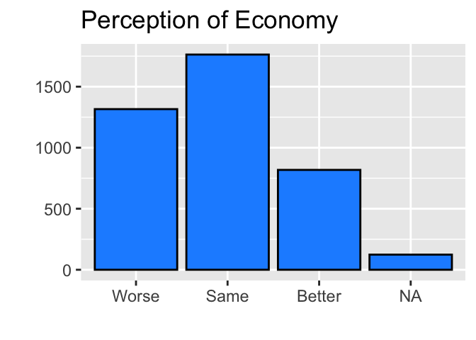
The bar chart looks much better now. Note that we didn’t need to use theme(axis.text.x = element_text(angle = 90)) anymore in the above code, because the names of categories are short enough to appear horizontally.
4.2.7 Remove NA: drop_na()
Now we will remove NA from the bar chart. For this purpose, we use the drop_na() function. A basic syntax of the drop_na() function is this (the code below is not intended to be implemented).
drop_na(name_of_data_frame, name_of_variable)The first argument is the name of the data frame from which we want to remove missing observations, and the second argument is the name of the variable for which we want to eliminate missing observations.
In other words, the drop_na() function looks for the observations for which the variable in the second argument is missing (NA) and removes these observations from the data frame in the first argument.
Therefore, if we specify the drop_na() function as below, then the drop_na() function looks for the observations in ces2019 for which percep_economy_cps3 is missing (NA), and removes these observations from ces2019.
drop_na(ces2019, percep_economy_cps3)To draw a bar chart of percep_economy_cps3, we may replace ces2019 in the first argument of the ggplot() function with drop_na(ces2019, percep_economy_cps3). In this way, the ggplot() function will use a version of ces2019 from which the observations with percep_economy_cps3 missing are removed. Let’s try this.
ggplot(drop_na(ces2019, percep_economy_cps3), aes(percep_economy_cps3)) +
geom_bar(fill = "dodgerblue", color = "black") +
labs(title="Perception of Economy") +
ylab("") +
xlab("")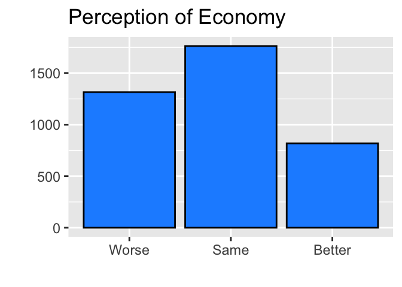
Now we were able to draw a bar chart without NA.
4.3 Computing Summary Statistics
4.3.1 Standard Deviation and IQR: sd(), IQR()
In Chapter 3, we computed the mean and the median of a variable using the mean() and median() functions. Here I introduce the sd() and IQR() functions to compute the standard deviation and IQR of a variable.
A basic syntax of the sd() and IQR() functions is the same as the mean() and median() functions. The first argument of these functions is the variable for which we want to compute this summary statistic. We should also specify na.rm = TRUE (na.rm stands for “remove NA”). Otherwise, these functions do not compute the summary statistics if there are missing observations for the specified variable.
Below I compute the standard deviation and IQR for the Trudeau thermometer variable (trudeau_therm_cps) in ces2019.
sd(ces2019$trudeau_therm_cps, na.rm = TRUE)[1] 30.68348 IQR(ces2019$trudeau_therm_cps, na.rm = TRUE)[1] 60The standard deviation of the Trudeau thermometer (trudeau_therm_cps) is approximately 31, and its IQR is 60.
4.3.2 Mode for Categorical Variables
Note that the mean(), median(), sd(), and IQR() functions work for quantitative or numeric variables, such as trudeau_therm_cps, but do not work for categorical variables or factors, such as percep_economy_cps. Let’s try the mean() function for percep_economy_cps.
We will get NA and an error message saying that we cannot compute this summary statistic for categorical variables or factors.
mean(ces2019$percep_economy_cps, na.rm = TRUE)Warning in mean.default(ces2019$percep_economy_cps, na.rm = TRUE): argument is
not numeric or logical: returning NA[1] NAIn fact, while these summary statistics are useful and appropriate for quantitative or numeric variables, they may not be useful or appropriate for categorical variables.
Especially for nominal, categorical variables, neither the mean nor the median makes sense. For example, consider the variable on individual’s vote intention, in which the possible choices are Liberals, Conservative, NDP, BQ, Greens, and others. It is impossible to conceptualize the average of this variable. As there is no natural order among these choices, we cannot conceptualize the median for this variable, either. Instead, an appropriate summary statistic for the center of distribution for nominal, categorical variables like this one is the mode.
The mode is also an appropriate summary of the center of distribution for ordinal categorical variables. In addition, the median is useful for ordinal variables, because there is a natural order among the categories of this type of variables.
The mode of a categorical variable may easily be identified from a bar chart. Consider the bar chart of percep_economy_cps that we drew above.

As the mode is the category with the largest number of observations, we can easily identify “Same” as the mode for this variable.
4.3.3 Median for Ordinal Catagorical Variables — Change Factor to Numeric: as.numeric()
percep_economy_cps is an ordinal, categorical variable because there is a natural order among each category from “Worse” to “Same” to “Better.” Therefore, we may also want to find the median for this variable. As we have seen, however, the median() function does not work for a categorical variable stored as a factor. Therefore, to apply the median() function to an ordinal, categorical variable, we first need to transform the categorical variable stored as a factor to a numeric variable. We use the as.numeric() function for this purpose. We specify the name of the variable which we want to transform to a numeric variable as the argument for the as.numeric() function.
Let’s create a numeric version of percep_economy_cps using the mutate() and the as.numeric() functions. In the code below, I call the new variable percep_ceonomy_cps_n, in which n stands for a numeric variable.
ces2019 <- mutate(ces2019,
percep_economy_cps_n = as.numeric(percep_economy_cps3))Let’s compare percep_economy_cps3 and percep_economy_cps_n. Below I show the first few observations of each variable, respectively, by the glimpse() function.
glimpse(ces2019)Rows: 4,021
Columns: 2
$ percep_economy_cps3 <fct> Worse, Same, Better, Same, Better, Worse, NA, Bet…
$ percep_economy_cps_n <dbl> 1, 2, 3, 2, 3, 1, NA, 3, 2, 2, 1, 2, 2, 2, 1, 3, …You may also use the head() function to check the first few observations of percep_economy_cps3 and percep_economy_cps_n.
head(ces2019$percep_economy_cps3)[1] Worse Same Better Same Better Worse
Levels: Worse Same Better head(ces2019$percep_economy_cps_n)[1] 1 2 3 2 3 1As you can see above, now each category is replaced by numbers from 1 to 3 in percep_economy_cps_n. More specifically, percep_economy_cps_n equals 1 for “Worse”, 2 for “Same”, and 3 for “Better.”
These numbers correspond to the order of categories or levels in percep_economy_cps3. Let’s check the order of levels in percep_economy_cps.
levels(ces2019$percep_economy_cps3)[1] "Worse" "Same" "Better"As demonstrated in this example, if we apply the as.numeric() function to a categorical variable stored as a factor to transform it to a numeric variable, the numbers that appear in the resulting variable is in the order of the levels of the original categorical variable stored as a factor.
Since percep_economy_cps_n is a numeric variable, we can apply the functions for summary statistics for numeric variables. For example, we can use the median() function to find the median category for percep_economy_cps_n.
median(ces2019$percep_economy_cps_n, na.rm = TRUE)[1] 2The median we got above is 2. Since percep_economy_cps_n = 2 if percep_economy_cps3 = “Same,” the median of the perception of economy is “Same.”
4.4 Box Plot: geom_boxplot()
In this section, we are going to use the ipe2015 dataset. We will draw a box plot of trade_WDI, which is a volume of trade (export + import) as % of GDP across countries around the world.
To draw a box plot, we add the geom_boxplot() function to the ggplot() function. Below is the simplest implementation without any arguments for the geom_boxplot() function.
ggplot(ipe2015, aes(trade_WDI)) +
geom_boxplot()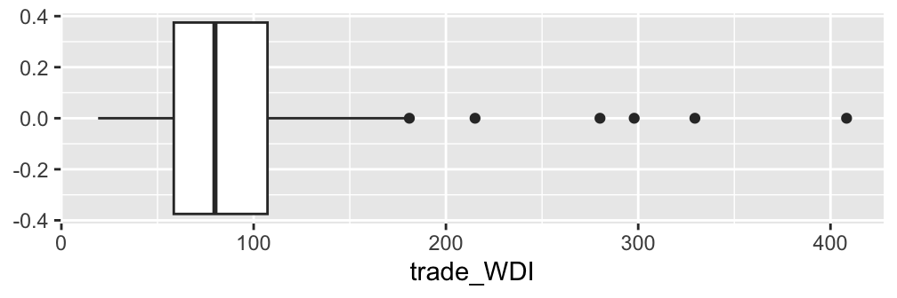
As we can see, the default option of the geom_boxplot() function produces a horizontal box plot. Let’s change it to a vertical box plot. For this purpose, we should specify y = trade_WDI in the aes() function inside the ggplot() function. This instructs the ggplot() function that the values of trade_WDI should appear in the vertical or y axis.
ggplot(ipe2015, aes(y = trade_WDI)) + # Add "y =".
geom_boxplot()
The box in this boxplot may be too wide. It would look better if we can make it thinner. Below I added two new arguments: x = factor(0) in the aes() function and width = 0.2 in the geom_boxplot() function. The width argument in the geom_boxplot() function controls the width of the box. To let this argument work, you also need to specify x = factor(0) in the aes() function. You may change the width of the box further by specifying a different value for the width argument for the geom_boxplot function. I’d suggest you try a few different values to see how the box width changes.
ggplot(ipe2015, aes(y = trade_WDI, x = factor(0))) + # Add x = factor(0).
geom_boxplot(width = 0.2) # Specify the width argument.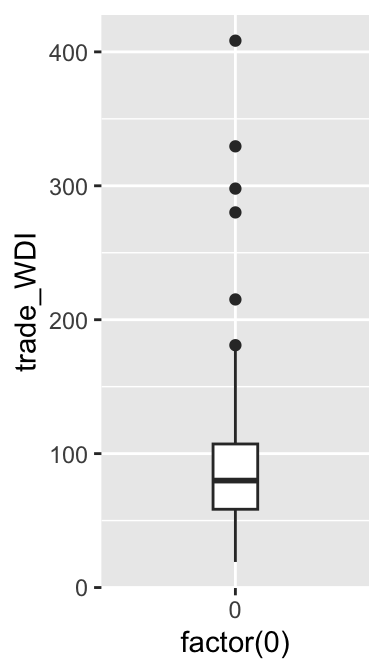
As suggested in the lecture, a default length of whisker is 1.5 times IQR. While this length of whisker looks good to this box plot, let’s change it to see how it appears differently. For this purpose, we specify the coef argument in the geom_boxplot() function. We specify the number of times of IQR that we want for the length of whisker in the coef argument. Below, I specify it at 3. Then, the length of whisker to be drawn is 3 times IQR.
ggplot(ipe2015, aes(y = trade_WDI, x = factor(0))) +
geom_boxplot(width = 0.2, coef = 3) # Add the coef argument.As you can see, the length of the upper whisker is longer than before, and the two outliers that appeared above the upper whisker disappeared because these outliers are now behind the upper whisker. I’d suggest you try a few different values to see how the length of whisker changes.
Perhaps, you noticed that the length of the lower whisker didn’t change. Moreover, in the original box plot where we didn’t specify the coef argument and therefore, we used the default length of 1.5 times IQR, the length of the lower whisker was shorter than the length of the upper whisker, or 1.5 times IQR. This is because the lower (or upper) whisker extends only to the minimum (or maximum) value of a variable. In other words, the minimum value of trade_WDI is within 1.5 times IQR, and therefore, the lower whisker was shorter than the upper whisker in the original box plot, and its length didn’t change when we changed the length of whisker to 3 by the coef argument.
We can further edit the box plot using the functions we learned in Chapter 3. (I don’t use the coef argument here because 1.5 times IQR seems to be reasonable for this variable.)
trade_box <- ggplot(ipe2015, aes(y = trade_WDI, x = factor(0))) +
geom_boxplot(width = 0.2, fill="cyan4") +
labs(title = "Trade (% of GDP)") +
xlab("") +
ylab("")
print(trade_box)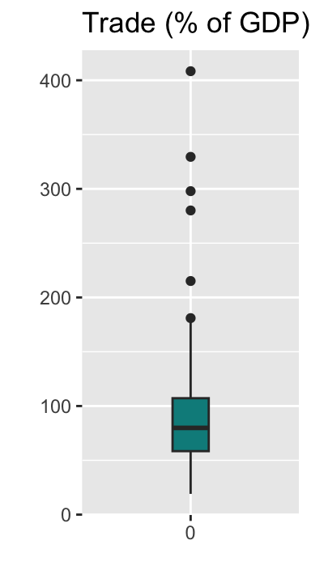
Note that in the above code, I assigned the ggplot() + geom_boxplot() functions to a new object trade_box and then used the print() function to draw the box plot.
You may want to remove 0 on the horizontal axis. We can do this by specifying the axis.text.x argument for the theme() function as follows. Recall that trade_box includes all ggplot() + geom_boxplot() functions assigned above, and we can add additional functions to trade_box.
trade_box +
theme(axis.text.x = element_blank())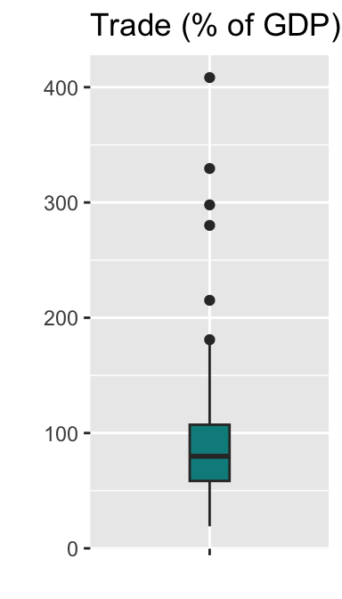
You may further want to remove the tick mark on the horizontal axis. We can do this by specifying the axis.ticks.x argument for the theme() function as follows.
trade_box +
theme(axis.text.x = element_blank(),
axis.ticks.x = element_blank())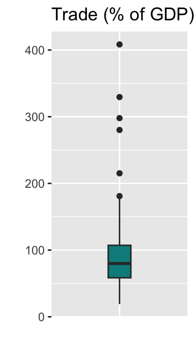
Now this box plot looks pretty good.
A box plot may also be drawn horizontally. I suggest you identify what is different in the following code for a horizontal box plot from the previous code for a vertical box plot.
ggplot(ipe2015, aes(x = trade_WDI, y = factor(0))) +
geom_boxplot(width = 0.2, fill="cyan4") +
labs(title = "Trade (% of GDP)") +
xlab("") +
ylab("") +
theme(axis.text.y = element_blank(),
axis.ticks.y = element_blank())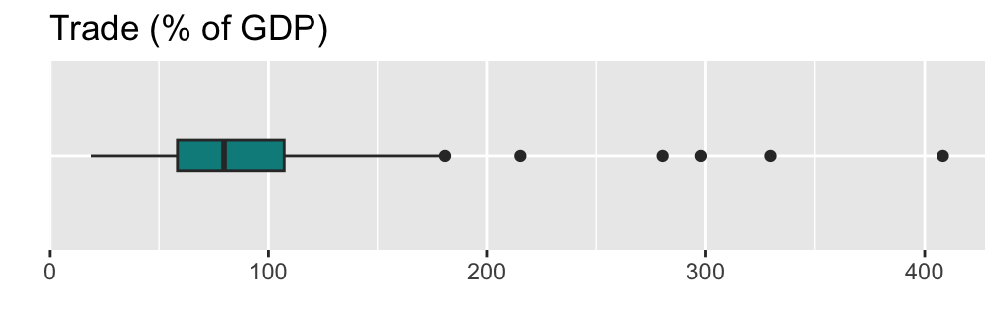
Here I use the term “format” loosely. There are more precise technical terms, such as “type” and “class”, to refer to the characteristics of R objects, but I don’t use them to avoid unnecessary technical details.↩︎
<dbl>stands for “double-precision,” which refers to the level of precision of numbers stored in a variable. For our purposes, you just need to understand that<dbl>is for a numeric variable.↩︎Recall that the assignment operator (<-) assigns the right hand side of <- to the left hand side of <-.↩︎